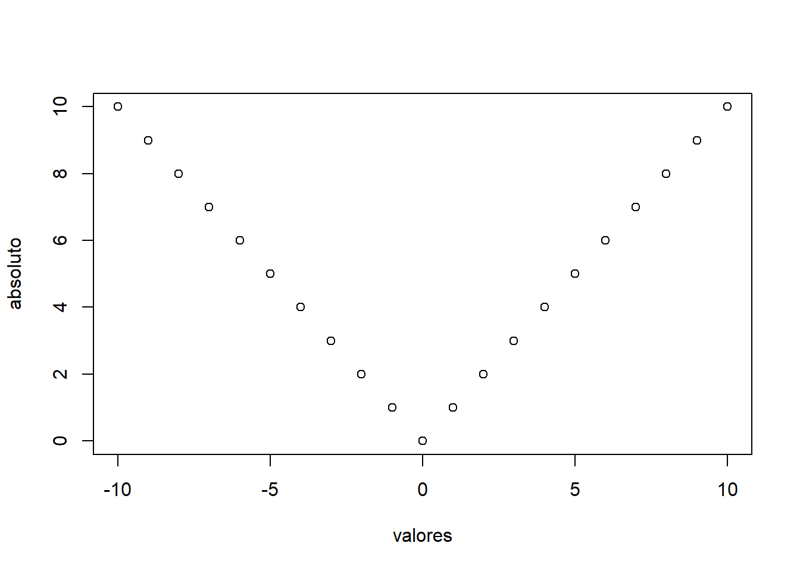

3 Estruturas de Dados
Este segundo Capitulo foi baseado no curso on-line Code School Try R e no livro Conhecendo o R: Um visão mais que estatística, modificações foram realizadas utilizando outros materiais que se encontram referenciado no final do Capitulo.
3.1 Vetor
Um vetor é simplesmente uma lista de valores.
A maneira mais simples de usar um vetor é usando o comando c(), que concatena elementos num mesmo objeto.
Exemplo
## [1] 2 3 5 7 11Os argumentos de c() podem ser tanto elementos únicos quanto outros objetos. Adicione três números no vetor x
## [1] 2 3 5 7 11 13 17 193.1.1 Vetores de Sequência
Se você precisa de um vetor com uma sequência de números, você pode cria-lo com a notação start:end. Vamos fazer um vetor com valores de 1 a 7:
## [1] 1 2 3 4 5 6 7Uma maneira mais versátil de fazer sequências é chamar a função seq. Vamos fazer o mesmo com seq () :
## [1] 1 2 3 4 5 6 7A função seq também permite que você use incrementos diferentes de 1. Experimente com etapas de 0.5.
## [1] 1.0 1.5 2.0 2.5 3.0 3.5 4.0 4.5 5.0 5.5 6.0 6.5 7.0## [1] 7.0 6.5 6.0 5.5 5.0 4.5 4.0 3.5 3.0 2.5 2.0 1.5 1.0Todo objeto possui atributos intrínsecos: tipo e tamanho. Com relação ao tipo ele pode ser: numérico, caractere, complexo e lógico. Existem outros tipos, como por exemplo, funções ou expressões, porém esses não representam dados.
As funções mode() e length() mostram o tipo e tamanho de um objeto, respectivamente.
## [1] "numeric"## [1] 5## [1] "character"## [1] "logical"## [1] "complex"Se o vetor é muito longo e não “cabe” em uma linha o R vai usar as linhas seguintes para continuar imprimindo o vetor.
## [1] 100 99 98 97 96 95 94 93 92 91 90 89 88 87 86 85 84 83 82
## [20] 81 80 79 78 77 76 75 74 73 72 71 70 69 68 67 66 65 64 63
## [39] 62 61 60 59 58 57 56 55 54 53 52 51 50Os números entre colchetes não fazem parte do objeto e indica a posição do vetor naquele ponto. Pode-se ver que [1] indica que o primeiro elemento do vetor estão naquela linha, [17] indica que a linha seguinte começa pelo décimo setimo elemento do vetor e assim por diante.
Você pode recuperar um valor individual dentro de um vetor fornecendo seu índice numérico entre colchetes. Tente obter o valor 18:
## [1] 83Muitas línguagem de programação iniciam índices de matriz em 0, mas os índices vetoriais de R começam em 1. Obtenha o primeiro valor digitando:
## [1] 100Você pode atribuir novos valores dentro de um vetor existente. Tente mudar o terceiro valor 28:
Se você adicionar novos valores ao final, o vetor aumentará para acomodá-los. Vamos adicionar um valor no final
Você pode usar um vetor entre os colchetes para acessar vários valores. Tente obter a primeira e a terceira palavras
## [1] 100 28Isso significa que você pode recuperar intervalos de valores. Obter a segunda a quarta palavras:
## [1] 99 28 97Você também pode definir intervalos de valores; apenas forneça os valores em um vetor. Adicione valores 5 a 7:
Agora tente acessar o oitavo valor do vetor:
## [1] 933.1.2 Nomes de vetores
Para esse desafio, criaremos um vetor de 3 itens e armazená-lo na variável solo.
Você pode atribuir nomes aos elementos de um vetor passando um segundo vetor preenchido com os nomes com a função names (), assim:
## Argila Areia Silte
## 1 2 3Agora, defina o valor atual para o silte para um valor diferente usando o nome em vez da posição.
3.1.3 Plotando um vetor
A função barplot () desenha um gráfico de barras com os valores de um vetor. Vamos criar um novo vetor para você e armazená-lo na variável chuva.
Agora, tente passar o vetor para a função barplot:
Se você atribuir nomes aos valores do vetor, o R usará esses nomes como rótulos no gráfico da barra. Vamos usar a função names () novamente:
Agora, se você digitar barplot (chuva) com o vetor novamente, você verá os rótulos:
Agora, tente chamar barplot em um vetor de números inteiros que variam de 1 a 100:
3.1.4 Operações matemáticas
A maioria das operações aritméticas funcionam tão bem em vetores quanto em valores únicos. Vamos fazer outro vetor de exemplo para você trabalhar e armazená-lo a variável a
Se você adicionar um escalar (um único valor) a um vetor, o escalar será adicionado a cada valor no vetor, retornando um novo vetor com os resultados. Tente adicionar 1 a cada elemento em nosso vetor:
## [1] 2 3 4O mesmo se aplica na divisão, multiplicação ou qualquer outra aritmética básica. Tente dividir nosso vetor por 2:
## [1] 0.5 1.0 1.5Agora, tente multiplicar nosso vetor por 2:
## [1] 2 4 6Se você adicionar dois vetores, R irá tirar cada valor de cada vetor e adicioná-los. Vamos fazer um segundo vetor para você experimentar e armazená-lo na variável b
Tente adicioná-lo ao vetor a:
## [1] 5 7 9Agora tente subtrair b de a:
## [1] -3 -3 -3Você também pode tirar dois vetores e comparar cada item. Veja quais valores nos vetores são iguais aos de um segundo vetor
## [1] TRUE FALSE TRUEObserve que R não testou se os vetores inteiros eram iguais; verificou cada valor no vetor a contra o valor no mesmo índice no nosso novo vetor.
Verifique se cada valor nos vetores são menores que o valor correspondente em outro vetor:
## [1] FALSE TRUE FALSEFunções que normalmente funcionam com escalares também podem operar em cada elemento de um vetor. Tente obter o seno de cada valor em nosso vetor:
## [1] 0.8414710 0.9092974 0.1411200Agora tente obter as raízes quadradas com a função sqrt:
## [1] 1.000000 1.414214 1.7320513.1.5 Parcelas de dispersão
A função plot leva dois vetores, um para valores X e um para valores Y, e desenha um gráfico deles.
Vamos desenhar um gráfico que mostra a relação de números e seus senos.
Primeiro, precisaremos de alguns dados de amostra. Criaremos um vetor com alguns valores fracionários entre 0 e 20, e armazenó-lo na variável x. E na variável y um segundo vetor com os senos de x:
Em seguida, basta chamar a função plot com seus dois vetores:
Observa=se sobre o gráfico que os valores do primeiro argumento (x) são usados para o eixo horizontal, e os valores do segundo (y) para o vertical.
Vamos criar um vetor com alguns valores negativos e positivos para você e armazenó-lo na variável valores.
Também criaremos um segundo vetor com os valores absolutos do primeiro e armazenó-lo na variável absoluto.
Tente traçar os vetores, com os valores no eixo horizontal e no eixo vertical os absoluto.

3.1.6 Valores Faltantes
As vezes, ao trabalhar com dados de amostra, um determinado valor não está disponível. Mas não é uma boa idéia apenas tirar esses valores. R tem um valor que indica explicitamente uma amostra não estava disponível: NA. Muitas funções que funcionam com vetores tratam esse valor especialmente.
Vamos criar um vetor para você com uma amostra ausente e armazenó-lo na variével a.
Tente obter a soma de seus valores e veja qual é o resultado:
## [1] NAA soma é considerada “não disponível” por padrão porque um dos valores do vetor foi NA.
Lembre-se desse comando para mostrar ajuda para uma função. Apresente a ajuda para a função sum:
Como você vê na documentação, sum pode tomar um argumento opcional na.rm,. ? configurado FALSE por padrão, mas se você configurá-lo com TRUE, todos os argumentos NA serão removidos do vetor antes do cálculo ser executado.
Tente rondar sum novamente, com o na.rm conjunto para TRUE:
## [1] 203.2 Matrizes
Há varias formas de criar uma matriz. O comando matriz() recebe um vetor como argumento e o transfoma em uma matrix de acordo com as dimensões.
Vamos fazer uma matriz de 3 linhas de altura por 4 colunas de largura, com todos os seus campos definidos 0.
## [,1] [,2] [,3] [,4]
## [1,] 0 0 0 0
## [2,] 0 0 0 0
## [3,] 0 0 0 0Você também pode usar um vetor para inicializar o valor de uma matriz. Para preencher uma matriz de 3x4, você precisará de um vetor de 12 itens.
## [1] 1 2 3 4 5 6 7 8 9 10 11 12Agora chame matrix com o vetor, o número de linhas e o número de colunas:
## [,1] [,2] [,3] [,4]
## [1,] 1 4 7 10
## [2,] 2 5 8 11
## [3,] 3 6 9 12Você também pode usar um vetor para inicializar o valor de uma matriz. Para preencher uma matriz 3x4, você precisará de um vetor de 12 itens. Nós vamos fazer isso para você agora:
## [1] 1 2 3 4 5 6 7 8 9 10 11 12Agora chame matrix com o vetor, o número de linhas e o número de colunas:
## [,1] [,2] [,3] [,4]
## [1,] 1 4 7 10
## [2,] 2 5 8 11
## [3,] 3 6 9 123.2.1 Outras formas
## [,1] [,2] [,3] [,4]
## [1,] 1 4 7 10
## [2,] 2 5 8 11
## [3,] 3 6 9 12Note que as matrizes são preenchidas ao longo das colunas. Para que a matriz seja preenchida por linhas deve-se alterar o argumento byrow, que, por padrão, está definido como FALSE, passe para TRUE
## [,1] [,2] [,3] [,4]
## [1,] 1 2 3 4
## [2,] 5 6 7 8
## [3,] 9 10 11 12Os valores do vetor são copiados para a nova matriz, um por um. Você também pode reformular o próprio vetor em uma matriz. Crie um vetor de 8 itens:
A função dim define as dimensões para uma matriz. Ele aceita um vetor com o número de linhas e o n?mero de colunas a serem atribu?das.
Atribua novas dimens?es para foliar passando um vetor especificando 2 linhas e 4 colunas ( c(2, 4)):
O vetor não é mais unidimensional. Foi convertido, no local, para uma matriz. Agora, use a função matrix para criar uma matriz 5x5, com seus campos inicializados para qualquer valor que você desejar.
## [,1] [,2] [,3] [,4] [,5]
## [1,] 2 2 2 2 2
## [2,] 2 2 2 2 2
## [3,] 2 2 2 2 2
## [4,] 2 2 2 2 2
## [5,] 2 2 2 2 23.2.2 Acesso a Matriz
Obter valores de matrizes não é diferente de vetores; você só precisa fornecer dois índices em vez de um. Abra a matriz foliar:
## [,1] [,2] [,3] [,4]
## [1,] 1 3 5 7
## [2,] 2 4 6 8Tente obter o valor da segunda linha na terceira coluna da matriz foliar;
## [1] 6O valor da primeira linha da quarta coluna
## [1] 7Você pode obter uma linha inteira da matriz omitindo o índice da coluna (mas mantenha a virgula). Tente recuperar a segunda linha:
## [1] 2 4 6 8Para obter uma coluna inteira, omita o índice da linha. Recupere a quarta coluna:
## [1] 7 8Você pode ler várias linhas ou colunas, fornecendo um vetor ou sequência com seus índices. Tente recuperar as colunas de 2 a 4:
## [,1] [,2] [,3]
## [1,] 3 5 7
## [2,] 4 6 8O comando summary pode ser usado para obter informações da matriz
## V1 V2 V3 V4
## Min. :1.00 Min. :3.00 Min. :5.00 Min. :7.00
## 1st Qu.:1.25 1st Qu.:3.25 1st Qu.:5.25 1st Qu.:7.25
## Median :1.50 Median :3.50 Median :5.50 Median :7.50
## Mean :1.50 Mean :3.50 Mean :5.50 Mean :7.50
## 3rd Qu.:1.75 3rd Qu.:3.75 3rd Qu.:5.75 3rd Qu.:7.75
## Max. :2.00 Max. :4.00 Max. :6.00 Max. :8.00Se desejar um resumo de todos os elementos da matriz, basta transformá-la em um vetor
## Min. 1st Qu. Median Mean 3rd Qu. Max.
## 1.00 2.75 4.50 4.50 6.25 8.003.2.3 Visualizações em dados matriciais
Com um mapa de elevação. Tudo fica a 1 metro acima do nível do mar. Vamos criar uma matriz de 10 por 10 com todos os seus valores inicializados para 1 para você:
Na quarta linha, sexta coluna, defina a elevação para 0:
Mapa de contorno dos valores passando a matriz para a função contour
Criar um gráfico em perspectiva 3D com a função persp:
Podemos consertar isso especificando nosso próprio valor para o parâmetro expand.
R inclui alguns conjuntos de dados de amostra. Um deles é o volcanoum mapa 3D de um vulcão adormecido da Nova Zelândia.
É simplesmente uma matriz de 87x61 com valores de elevão, mas mostra o poder das visualizações de matriz do R. Criar um mapa de calor:
Gráfico em perspectiva:
A função image criar um mapa de calor:

3.2.4 Mais informações sobre construções de Matrizes
Há outros comandos que podem ser usados para construir matrizes como cbind() e rbind (). Esses comandos concatenam colunas ou linhas, respectivamente, na matriz (ou vetor).
## [,1] [,2]
## [1,] 10 5
## [2,] 9 4
## [3,] 8 3
## [4,] 7 2
## [5,] 6 1## [,1] [,2] [,3]
## [1,] 10 5 1
## [2,] 9 4 2
## [3,] 8 3 3
## [4,] 7 2 4
## [5,] 6 1 5## [,1] [,2] [,3]
## [1,] 10 5 1
## [2,] 9 4 2
## [3,] 8 3 3
## [4,] 7 2 4
## [5,] 6 1 5
## [6,] 28 28 28Opcionalmente matrizes podem ter nomes associados ás linhas e colunas (“rownames”e “colnames”). Cada um destes componentes da matrix é um vetor de nomes.
m1 <- matrix(1:12, ncol = 3)
dimnames(m1) <- list(c("L1", "L2", "L3", "L4"), c("C1", "C2", "C3"))
dimnames(m1)## [[1]]
## [1] "L1" "L2" "L3" "L4"
##
## [[2]]
## [1] "C1" "C2" "C3"Matrizes são muitas vezes utilizadas para armazenar frequências de cruzamentos entre variáveis. Desta forma é comum surgir a necessidade de obter os totais marginais, isto é a soma dos elementos das linhas e/ou colunas das matrizes, o que pode ser diretamente obtido com margin.table( ).
## L1 L2 L3 L4
## 15 18 21 24## C1 C2 C3
## 10 26 42## C1 C2 C3
## 2.5 6.5 10.53.3 Fatores
Os fatores são vetores em que os elementos pertencem a uma ou mais categorias temáticas. Por exemplo: ao criar um vetor de indicadores de “tratamentos” em uma análise de experimentos devemos declarar este vetor como um “fator”. Pode criar um fator usando o comando factor(), ou o comando gl.
## [1] T1 T1 T1 T1 T2 T2 T2 T2 T3 T3 T3
## Levels: T1 T2 T33.4 Array
O conceito de array generaliza a idéia de matrix. Enquanto em uma matrix os elementos são organizados em duas dimensões (linhas e colunas), em um array os elementos podem ser organizados em um número arbitrário de dimensões.
No R um array é definido utilizando a função array().
## , , 1
##
## [,1] [,2] [,3] [,4]
## [1,] 1 4 7 10
## [2,] 2 5 8 11
## [3,] 3 6 9 12
##
## , , 2
##
## [,1] [,2] [,3] [,4]
## [1,] 13 16 19 22
## [2,] 14 17 20 23
## [3,] 15 18 21 24Veja agora um exemplo de dados já incluído no R no formato de array. Para “carregar” e visualizar os dados digite:
## , , Age = Child, Survived = No
##
## Sex
## Class Male Female
## 1st 0 0
## 2nd 0 0
## 3rd 35 17
## Crew 0 0
##
## , , Age = Adult, Survived = No
##
## Sex
## Class Male Female
## 1st 118 4
## 2nd 154 13
## 3rd 387 89
## Crew 670 3
##
## , , Age = Child, Survived = Yes
##
## Sex
## Class Male Female
## 1st 5 1
## 2nd 11 13
## 3rd 13 14
## Crew 0 0
##
## , , Age = Adult, Survived = Yes
##
## Sex
## Class Male Female
## 1st 57 140
## 2nd 14 80
## 3rd 75 76
## Crew 192 20Para obter maiores informações sobre estes dados digite: help(Titanic)
Agora vamos responder ás seguintes perguntas, mostrando os comandos do R utilizados sobre o array de dados.
- Quantas pessoas havia no total?
## [1] 2201- Quantas pessoas havia na tripulação (crew)?
## [1] 885- Quantas pessoas sobreviveram e quantas morreram?
## No Yes
## 1490 711- Quais as proporções de sobreviventes entre homens e mulheres?
## Class
## 1st 2nd 3rd Crew
## 325 285 706 885## Sex
## Male Female
## 1731 470## Age
## Child Adult
## 109 2092## Survived
## No Yes
## 1490 711Esta função admite ainda índices múltiplos que permitem outros resumos da tabela de dados. Por exemplo mostramos a seguir como obter o total de sobreviventes e não sobreviventes, separados por sexo e depois as porcentagens de sobreviventes para cada sexo.
## Survived
## Sex No Yes
## Male 1364 367
## Female 126 344## Survived
## Sex No Yes
## Male 0.7879838 0.2120162
## Female 0.2680851 0.7319149## Class
## Sex 1st 2nd 3rd Crew
## Male 0.10398614 0.10340843 0.29462738 0.49797805
## Female 0.30851064 0.22553191 0.41702128 0.048936173.5 Data.frame
Os datas.frames são muitos semelhantes ás matrizes, pois têm linhas e colunas e, portanto, duas dimensões. Entretando, diferentemente das matrizes, colunas diferentes podem armazenar elementos de tipos diferentes. Por exemplo, a primeira coluna pode ser numérica, enquanto a segunda, constituida de caracteres. Cada coluna precisa ter o mesmo tamanho. Criar o vetor nomes
nome <- c("Melissa José",
"Jennifer Linhares",
"Gedilene Ponciano",
"Edinar da Silva",
"Osmar Emidio",
"Jeeziel Vieira")Criar vetor idade
Criar vetor sexo (categoria=fator)
Criar vetor altura
Reunir tudo em um data.frame
Ver atributos da tabela
## 'data.frame': 6 obs. of 4 variables:
## $ nome : Factor w/ 6 levels "Edinar da Silva",..: 5 4 2 1 6 3
## $ idade: num 17 18 16 15 15 18
## $ sexo : Factor w/ 2 levels "F","M": 1 1 1 1 2 2
## $ alt : num 180 170 160 150 140 168Adicionar nome as linhas com o comando row.names()
## nome idade sexo alt
## 1 Melissa José 17 F 180
## 2 Jennifer Linhares 18 F 170
## 3 Gedilene Ponciano 16 F 160
## 4 Edinar da Silva 15 F 150
## 5 Osmar Emidio 15 M 140
## 6 Jeeziel Vieira 18 M 168## Nome Idade Sexo altura
## 1 Melissa José 17 F 180
## 2 Jennifer Linhares 18 F 170
## 3 Gedilene Ponciano 16 F 160
## 4 Edinar da Silva 15 F 150
## 5 Osmar Emidio 15 M 140
## 6 Jeeziel Vieira 18 M 1683.5.1 Índice dos Data.frames
Buscar elementos
## [1] Jennifer Linhares
## 6 Levels: Edinar da Silva Gedilene Ponciano ... Osmar Emidio## Nome Idade Sexo altura
## 2 Jennifer Linhares 18 F 170Repare que apesar de “Nomes” ter sido criado como vetor de caracterer o R passou a entender como um fator dentro do data.frame.
## [1] Melissa José Jennifer Linhares Gedilene Ponciano Edinar da Silva
## [5] Osmar Emidio Jeeziel Vieira
## 6 Levels: Edinar da Silva Gedilene Ponciano ... Osmar EmidioTransformar para caracterer
## [1] "Melissa José" "Jennifer Linhares" "Gedilene Ponciano"
## [4] "Edinar da Silva" "Osmar Emidio" "Jeeziel Vieira"Acessando aos dados
## [1] "Melissa José" "Jennifer Linhares" "Gedilene Ponciano"
## [4] "Edinar da Silva" "Osmar Emidio" "Jeeziel Vieira"## [1] "Gedilene Ponciano"## [1] "Melissa José" "Jennifer Linhares" "Gedilene Ponciano"## 'data.frame': 6 obs. of 4 variables:
## $ Nome : chr "Melissa José" "Jennifer Linhares" "Gedilene Ponciano" "Edinar da Silva" ...
## $ Idade : num 17 18 16 15 15 18
## $ Sexo : Factor w/ 2 levels "F","M": 1 1 1 1 2 2
## $ altura: num 180 170 160 150 140 1683.5.2 Manipulando um Data.frame
Você pode manipular um data.frame add ou eliminando colunas ou linhas, assim como em matrizes. Podem-se usar os comandos cbind() e rbind () para adcionar colunas e linhas rescpectivamente, a um data.frame.
## Nome Idade Sexo altura Conceito
## 1 Melissa José 17 F 180 A
## 2 Jennifer Linhares 18 F 170 A
## 3 Gedilene Ponciano 16 F 160 A
## 4 Edinar da Silva 15 F 150 C
## 5 Osmar Emidio 15 M 140 A
## 6 Jeeziel Vieira 18 M 168 B
## 7 Caio Pinto 21 M 172 CAssim como para vetores e matrizes voce pode selecinar um subgrupo de um data.frame e armazena-lo em um outro objeto ou utilizar índices como o sinal negativo para eliminar linhas ou colunas de um data.frame.
## Nome Idade Sexo altura
## 1 Melissa José 17 F 180
## 2 Jennifer Linhares 18 F 170
## 3 Gedilene Ponciano 16 F 160
## 4 Edinar da Silva 15 F 150
## 5 Osmar Emidio 15 M 140
## 6 Jeeziel Vieira 18 M 168## Nome Idade Sexo altura
## 1 Melissa José 17 F 180
## 2 Jennifer Linhares 18 F 170
## 3 Gedilene Ponciano 16 F 160
## 4 Edinar da Silva 15 F 150A ordenação das linhas de um data.frame segundo os dados contidos em determinadas coluna também é extremamente útil
## Nome Idade Sexo altura
## 5 Osmar Emidio 15 M 140
## 4 Edinar da Silva 15 F 150
## 3 Gedilene Ponciano 16 F 160
## 6 Jeeziel Vieira 18 M 168
## 2 Jennifer Linhares 18 F 170
## 1 Melissa José 17 F 180## Nome Idade Sexo altura
## 1 Melissa José 17 F 180
## 2 Jennifer Linhares 18 F 170
## 6 Jeeziel Vieira 18 M 168
## 3 Gedilene Ponciano 16 F 160
## 4 Edinar da Silva 15 F 150
## 5 Osmar Emidio 15 M 1403.5.3 Separando um data.frame por grupos
## $F
## Nome Idade Sexo altura
## 1 Melissa José 17 F 180
## 2 Jennifer Linhares 18 F 170
## 3 Gedilene Ponciano 16 F 160
## 4 Edinar da Silva 15 F 150
##
## $M
## Nome Idade Sexo altura
## 5 Osmar Emidio 15 M 140
## 6 Jeeziel Vieira 18 M 1683.6 Lista
Lista são objetos muito úteis, pois são usados para combinar diferente estruturas de dados em um mesmo objeto, ou seja, vetores, matrizes, arrays, data.frames e ate mesmo outras listas.
## $idade
## [1] 32
##
## $nome
## [1] "Maria"
##
## $notas
## [1] 98 95 78
##
## $B
## [,1] [,2]
## [1,] 1 3
## [2,] 2 4Lista são construidas com o comando list (). Quando você exibe um objeto que é uma lista, cada componente é mostrado com seu nome $ ou [ ]
3.6.1 Alguns comandos que retornam listas
Muitos comando do R retornam seu resultado na forma de listas. Um exemplo pode ser mostrado com o uso do comando t.tes(), que retorna um objeto que é uma lista.
##
## Two Sample t-test
##
## data: x and y
## t = -3.182, df = 8, p-value = 0.01296
## alternative hypothesis: true difference in means is not equal to 0
## 95 percent confidence interval:
## -3.1044729 -0.4955271
## sample estimates:
## mean of x mean of y
## 2.6 4.4Comprovar que é uma lista
## [1] TRUE## [1] "list"Exibir o componentes da lista
## [1] "statistic" "parameter" "p.value" "conf.int" "estimate"
## [6] "null.value" "stderr" "alternative" "method" "data.name"## [1] -3.1044729 -0.4955271
## attr(,"conf.level")
## [1] 0.953.7 Referência
MELO, M. P.; PETERNELI, L. A. Conhecendo o R: Um visão mais que estatística. Viçosa, MG: UFV, 2013. 222p.
Prof. Paulo Justiniando Ribeiro >http://www.leg.ufpr.br/~paulojus/<
Prof. Adriano Azevedo Filho >http://rpubs.com/adriano/esalq2012inicial<
Prof. Fernando de Pol Mayer >https://fernandomayer.github.io/ce083-2016-2/<
Site Interativo Datacamp >https://www.datacamp.com/<